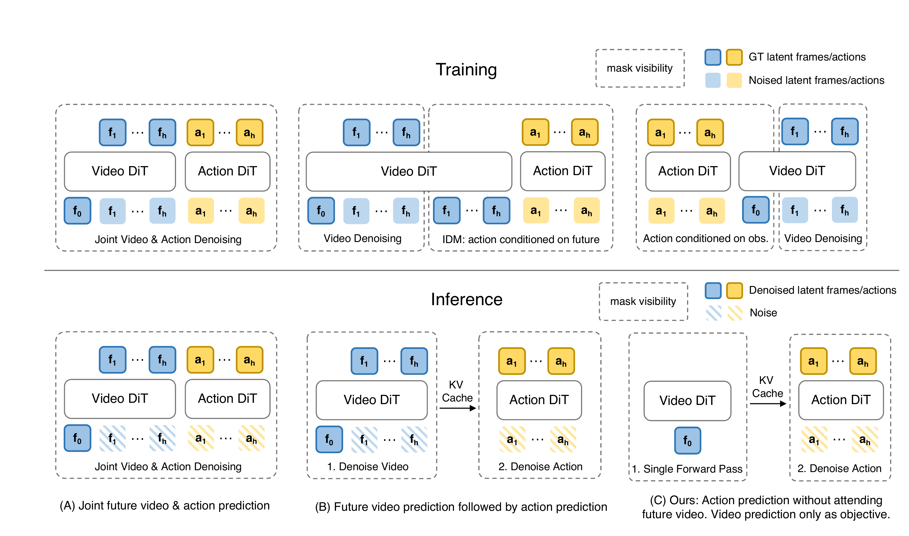
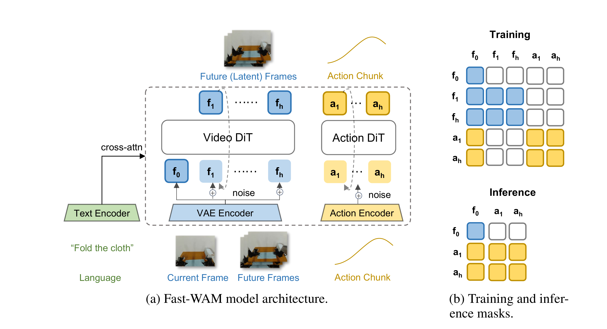
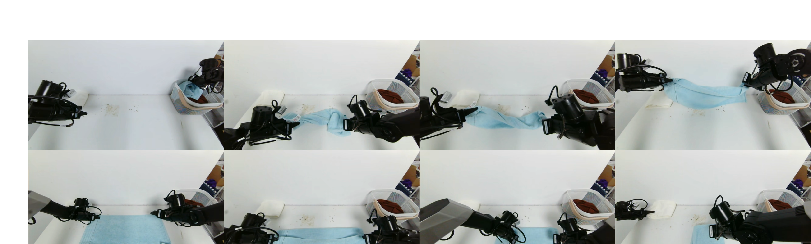
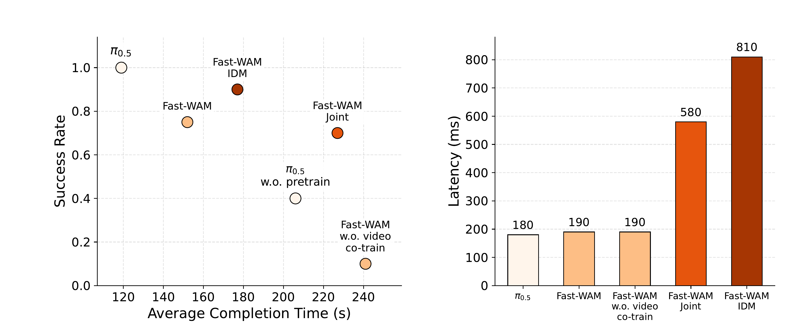

核心问题：WAM 的收益从哪里来？
世界动作模型（WAM）比普通 VLA 更强，普遍认为是因为它能"想象未来"再执行。但这个假设从来没被严格验证过——也许 WAM 的收益只是来自训练时视频联合学习塑造了更好的特征，而不是推理时真正"展开未来"。Fast-WAM 把这两个因素精确解耦，得出一个出人意料的结论：推理时的未来想象几乎可以去掉，训练时的视频共同训练才是关键。结果：速度提升 4× 以上，性能几乎不变。
绝大多数现有 WAM 遵循 imagine-then-execute 范式：先迭代去噪生成未来视频帧，再以此为条件预测动作。这带来两个麻烦：① 推理延迟高（需要完整跑视频去噪）；② 让我们搞不清楚"到底是哪一步在起作用"。Fast-WAM 提出一个干净的问题：
WAMs 需要在测试时显式生成未来观测，还是它们的收益主要来自训练过程中对未来的建模？
为了回答这个问题，论文设计了一套受控实验：用同一个骨干（Wan2.2-5B），在同一个训练框架下，实例化多种"推理时是否生成视频"的变体，控制住所有其他变量，只改变这一个因素。
① 训练时的视频共同训练是主要驱动力：去掉 video co-training → 性能下降 8pp（RoboTwin）到 4pp（LIBERO），实机任务从 80% 跌到 10%。
② 推理时的视频生成贡献有限：Fast-WAM（无推理视频）vs imagine-then-execute 变体 → 差距 ≤ 1.2pp，几乎可忽略。
③ Fast-WAM 速度极快：190ms vs IDM 的 810ms，快 4× 以上，同时无需大规模 embodied pretraining。
展开原文 · 核心假设
"The effectiveness of WAMs may stem from two distinct sources: (i) the video prediction objective during training, which can encourage the model to learn physically meaningful latent representations, and (ii) explicit future generation during inference, which may provide additional foresight for action prediction."
三种 WAM 范式：受控实验设计
上一节提出了问题，这一节是实验设计的核心：怎么才能"公平"地比较训练时视频目标 vs 推理时视频生成的贡献？答案是：在同一个骨干、同一个训练框架下，实例化三种不同推理行为的变体，加上一个"去掉视频 co-training"的对照组，总共四个变体，两两对比。

四个实验变体
通过比较"Fast-WAM vs (Joint/IDM)"可以测量推理时视频生成的贡献（其他一切相同）。
通过比较"Fast-WAM vs (w.o. video co-train)"可以测量训练时 video co-training 的贡献（推理行为相同）。
两个对比都在同一个骨干、相同超参下，控制变量非常干净。
变体 A：Fast-WAM-Joint（推理最重）
训练和推理都做联合去噪。视频和动作 token 共享 attention，动作生成全程"看到"视频去噪过程。推理需要多步联合去噪，延迟约 190ms（因为是并行去噪，比 IDM 快）。
输入是什么：随机噪声，以及当前画面、语言指令或机器人状态等条件信息。噪声只是生成过程的起点，不是机器人真的要执行的动作。
这一步究竟做什么：训练和推理都做联合去噪。视频和动作 token 共享 attention，动作生成全程"看到"视频去噪过程。推理需要多步联合去噪，延迟约 190ms（因为是并行去噪，比 IDM 快）。
输出到哪里：一组比原始输入更紧凑的内部特征；它不是最终动作或画面。这个结果会交给下一步“变体 B：Fast-WAM-IDM（推理最慢）”继续处理。
为什么不能省略：它把未经处理的原始问题变成后续模块可以计算的输入，是整条链路的起点。
变体 B：Fast-WAM-IDM（推理最慢）
两段串行：先跑 5B 视频 DiT 完整去噪生成未来帧（多步，最慢部分），再把生成帧送入动作 DiT。串行导致延迟叠加，810ms。但这也是最接近"视频作为显式推理媒介"这一理念的变体。
输入是什么：来自上一步“变体 A：Fast-WAM-Joint（推理最重）”的产物：一组比原始输入更紧凑的内部特征；它不是最终动作或画面。本步骤还会按论文设置读取当前条件、时间步或训练信号。
这一步究竟做什么：两段串行：先跑 5B 视频 DiT 完整去噪生成未来帧（多步，最慢部分），再把生成帧送入动作 DiT。串行导致延迟叠加，810ms。但这也是最接近"视频作为显式推理媒介"这一理念的变体。
输出到哪里：一个或多个候选未来、动作或轨迹，以及必要的中间状态。这个结果会交给下一步“变体 C：Fast-WAM（推理最快）”继续处理。
为什么不能省略：它承担上下两步之间的接口；缺少它，前一步产生的信息无法以正确格式或正确含义传到下一步。
变体 C：Fast-WAM（推理最快）
推理时只用第一帧干净 latent 做一次单向前向，提取世界表征 z(o,l)，再跑 10 步动作去噪。没有视频生成，没有多步视频去噪，190ms。训练时保留视频 co-training 损失，让 video DiT 学到好表征但推理时不用它生成未来。
输入是什么：来自上一步“变体 B：Fast-WAM-IDM（推理最慢）”的产物：一个或多个候选未来、动作或轨迹，以及必要的中间状态。本步骤还会按论文设置读取当前条件、时间步或训练信号。
这一步究竟做什么：推理时只用第一帧干净 latent 做一次单向前向，提取世界表征 z(o,l)，再跑 10 步动作去噪。没有视频生成，没有多步视频去噪，190ms。训练时保留视频 co-training 损失，让 video DiT 学到好表征但推理时不用它生成未来。
输出到哪里：一组比原始输入更紧凑的内部特征；它不是最终动作或画面。这个结果会交给下一步“对照组：w.o. video co-train（训练缺失）”继续处理。
为什么不能省略：它承担上下两步之间的接口；缺少它，前一步产生的信息无法以正确格式或正确含义传到下一步。
对照组：w.o. video co-train（训练缺失）
推理行为和 Fast-WAM 完全一样（也是单次前向），但训练时去掉了视频 co-training 损失 L_vid。纯粹的动作监督。这个变体用来回答：如果没有视频联合训练，Fast-WAM 的架构本身值多少分？答案：大幅下降，说明 video co-training 是核心。
输入是什么：来自上一步“变体 C：Fast-WAM（推理最快）”的产物：一组比原始输入更紧凑的内部特征；它不是最终动作或画面。本步骤还会按论文设置读取当前条件、时间步或训练信号。
这一步究竟做什么：推理行为和 Fast-WAM 完全一样（也是单次前向），但训练时去掉了视频 co-training 损失 L_vid。纯粹的动作监督。这个变体用来回答：如果没有视频联合训练，Fast-WAM 的架构本身值多少分？答案：大幅下降，说明 video co-training 是核心。
输出到哪里：参数得到更新的模型，或能供下一轮训练使用的新监督信号。这是图中这条链路的最终产物，随后会进入真实执行、模型更新或指标评测。
为什么不能省略：前面的数据或分数本身不会自动改变模型；必须通过损失函数把误差信号变成参数更新。
Fast-WAM 架构：MoT + 结构化注意力掩码
上一节定义了三种范式，这一节讲 Fast-WAM 本身的具体架构。关键设计目标：训练时让视频 DiT 和动作 DiT 共同学习（共享表征），但阻止动作 token 在训练时看到未来视频 token——这样推理时才能安全地移除未来视频，不影响动作预测的信息依赖关系。类比：厨师在训练时看过很多优质料理视频（学了感觉），但做菜时不需要边看视频边操作。

关键设计：为什么动作 token 不能看未来视频 token？
这是 Fast-WAM 能在推理时安全跳过视频生成的根本原因。如果训练时动作 token 可以 attend 到未来视频 token，那么推理时去掉未来视频 token 就会造成训练-推理分布偏移——模型在推理时缺少了它依赖的信息，性能会崩溃。
① 当前帧 f₀（干净 latent）：所有 token 都可以看到它——它是整个模型的"视觉锚点"
② 未来帧 f₁..fₙ（加噪 latent）：只有视频 token 互相看，动作 token 禁止访问
③ 动作 token a₁..aₙ：动作 token 互相可见（双向 attention）+ 可看 f₀，通过 video DiT 共享表征间接获得视频动态信息
| Backbone | Wan2.2-5B（视频 DiT + T5 文本编码器 + 视频 VAE） |
| Action Expert | 基于 Wan2.2 架构，hidden dim 缩减至 d_a=1024，参数量 1B，动作 horizon H=32 |
| 总参数量 | 5B + 1B = 6B |
| 视频帧率 | 时间维度 4× 下采样 → 每 action chunk 对应 9 个视频帧 |
| 推理去噪步数 | 10 步（CFG scale=1.0，logit-normal 噪声调度） |
| 推理延迟 | 190ms（vs Fast-WAM-IDM 810ms，vs π₀.₅ ~180ms） |
| 训练设备 | NVIDIA RTX 5090D V2 32GB GPU |
| 优化器 | AdamW，lr=1×10⁻⁴，weight decay=0.01，cosine annealing |
训练目标：联合 Flow Matching
架构确定了，这一节讲怎么训练。Fast-WAM 用的是 flow matching——把视频 latent 预测和动作块预测统一进同一个速度场框架。直觉：flow matching 是"在噪声中学习走直线"，训练时同时学走向视频目标和走向动作目标，推理时只走动作方向。
Flow Matching 基础
给定目标变量 $y$（可以是动作块或未来视频 latent），构造从纯高斯噪声 $\epsilon$ 到 $y$ 的插值轨迹：
- $y_t$
- 时间步 $t$ 处的插值样本：$t=0$ 时等于干净目标 $y$，$t=1$ 时等于纯噪声 $\epsilon$。训练时从 $t \in (0,1)$ 均匀（或 logit-normal）采样
- $(1-t)y + t\epsilon$
- 从 $y$ 到 $\epsilon$ 的线性插值——flow matching 的路径是直线（对比 DDPM 的曲线路径），所以理论上更高效
模型学习预测速度场（velocity field），使得顺着速度场走能从噪声还原到目标：
- $f_\theta(y_t, t, o, l)$
- 模型（视频 DiT 或动作 DiT）在时间步 $t$、输入噪声样本 $y_t$、条件观测 $o$、语言指令 $l$ 下预测的速度向量
- $\epsilon - y$
- 目标速度：从干净目标 $y$ 到噪声 $\epsilon$ 的方向（即"往噪声方向走"）。去噪时反方向走，即 $y - \epsilon$
- $\|\cdot\|_2^2$
- MSE loss，让预测速度尽量匹配真实速度
联合目标
- $a_{1:H}$
- 未来动作 chunk；动作 flow 直接决定策略输出和控制成功率。
- $z_{1:T}$
- 未来视频 latent；视频 flow 提供动作后果和时空动力学监督。
- $\mathcal L_{act}$
- 要求 action expert 恢复动作分布。
- $\mathcal L_{vid}$
- 要求 video expert 恢复视觉未来；两项同时优化不代表权重和梯度天然平衡，需通过消融确认视频分支确实帮助动作。
- $a_{1:H}$
- 动作块（ground-truth），长度 $H=32$。$\mathcal{L}_\text{act}$ 是动作 Expert DiT 的训练损失
- $z_{1:T}$
- 未来视频帧的 VAE latent token（$T=9$ 帧）。$\mathcal{L}_\text{vid}$ 是视频 DiT 的训练损失，即 video co-training
- $\lambda$
- 视频 co-training 的权重，平衡两个损失的量级。论文未指定具体值（通过消融确定）
- w.o. video co-train 对照组
- 把 $\lambda = 0$：等同于去掉 $\mathcal{L}_\text{vid}$，只留 $\mathcal{L}_\text{act}$。这就是对照组实验的操作，完全相同的架构和推理流程，只是训练时没有视频监督。
$\mathcal{L}_\text{vid}$ 强迫视频 DiT 学会"物理世界怎么演变"——物体运动轨迹、接触力学、形变规律。这些知识通过 MoT 共享 attention 渗入到动作 Expert 的表征里（通过 f₀ 的 latent）。即使推理时不显式生成未来，这些视觉物理先验已经编码在 z(o,l) 里，帮助动作预测更稳健。
实验结果：数据支持核心结论
前几节都是设计和理论，这一节让数据说话。三个评估平台：RoboTwin 2.0（50任务双臂仿真）、LIBERO（4套件仿真）、Galaxea R1 Lite 实机毛巾折叠。关键发现：Fast-WAM 不需要 embodied pretraining，在三个平台上表现都强，核心消融验证了"训练时 video co-training 远比推理时视频生成更重要"。
实机任务：Galaxea R1 Lite 毛巾折叠

速度 vs 性能：核心权衡可视化

RoboTwin 2.0 结果（Table 1）
数值为 clean + randomized 双设置平均成功率。Fast-WAM 无需 embodied pretraining。
Fast-WAM vs Fast-WAM-Joint：91.8 vs 90.6（差距 1.2pp）← 推理时视频生成的贡献
Fast-WAM vs Fast-WAM-IDM：91.8 vs 91.3（差距 0.5pp）← 推理时更贵的视频生成不值得
Fast-WAM vs w.o. video co-train：91.8 vs 83.8（差距 8pp）← 训练时视频 co-training 的贡献
结论：训练时视频 co-training 的贡献（8pp）≫ 推理时视频生成的贡献（0.5-1.2pp）
LIBERO 结果（Table 2）
| Fast-WAM（Ours） | Spatial 98.2 / Object 100.0 / Goal 97.0 / Long 95.2 → 平均 97.6% |
| Fast-WAM-Joint | 99.6 / 99.4 / 98.2 / 96.8 → 平均 98.5% |
| Fast-WAM-IDM | 98.8 / 97.8 / 97.8 / 97.6 → 平均 98.0% |
| w.o. video co-train | 89.2 / 99.2 / 95.4 / 90.0 → 平均 93.5%（-4.1pp） |
| LingBot-VA（有预训练） | 98.5 / 99.6 / 97.2 / 98.5 → 平均 98.5% |
| π₀.₅（有预训练） | 98.8 / 98.8 / 98.0 / 92.4 → 平均 97.0% |
w.o. video co-train 在 LIBERO-Object（99.2%）上接近满分，但在 LIBERO-Spatial（89.2%）和 LIBERO-Long（90.0%）上明显更差。这与 video co-training 的直觉一致：空间理解和长时序推理更依赖视觉物理表征，而目标识别（Object）更多依赖语义匹配。§4.3.2, p.8
与 VLA / Embodied AI 的联系
Fast-WAM 的结论对你理解整个 WAM/VLA 领域有很强的启发意义。这一节把它和相关工作联系起来，特别是与同期的 τ₀-WM 做一个有意思的对照——两篇论文几乎同时出现，但给出了截然不同的工程选择。
Fast-WAM vs τ₀-WM：同问题，不同答案？
| 研究问题 | Fast-WAM 问：推理时的视频生成必要吗？——答：不必要 τ₀-WM 问：怎么让视频生成在推理时发挥最大价值？——答：用 TTC（ACVS+RCS+LAR） |
| 推理策略 | Fast-WAM：跳过视频生成，单次前向，190ms，适合实时控制 τ₀-WM：TTC 路径用 ACVS 展开候选动作，提升精度但更慢 |
| 骨干 | 两者都基于 Wan2.2-5B 视频 DiT，这一时期（2026 上半年）的事实标准视频骨干 |
| 训练数据 | Fast-WAM：专注单一任务数据集（RoboTwin/LIBERO/毛巾折叠），无 embodied pretraining τ₀-WM：27.3K 小时异质数据（机器人+UMI+Ego），大规模预训练 |
| 结论兼容性 | 两篇论文并不矛盾：Fast-WAM 证明视频生成不是必需的；τ₀-WM 证明在有大量算力时视频生成能带来额外收益。两个结论在不同约束下都正确。 |
① 视频 co-training 是 VLA 的"隐性增强剂"：即使推理时不生成视频，训练时加入视频预测损失就能让动作 policy 更鲁棒。这对资源有限、没法跑完整 WAM 推理的系统很有用——只需在训练目标里加一项 $\mathcal{L}_\text{vid}$。
② Wan2.2 视频 DiT 是当前的"瑞士军刀"：Fast-WAM、τ₀-WM、MotionWAM 都基于它，说明大规模视频预训练骨干的迁移价值极高，是 2026 年 Embodied AI 的基础设施。
③ 受控消融的价值：Fast-WAM 的贡献不只是技术，更是一种研究方法论——在领域发展早期，严格解耦多个假设因素，比提出一个更复杂的系统更有价值。
π₀ 目前把视频预测当辅助训练目标（训练时用，推理时丢）。Fast-WAM 的实验为这个设计提供了严格的实验支持：这样做是对的，而且不需要在推理时保留视频预测。未来 VLA 可以放心在训练目标里加 $\mathcal{L}_\text{vid}$，不需要担心推理延迟问题。
① 评估任务相对简单（单视角毛巾折叠），对长时序多阶段任务的结论有待验证。
② 没有大规模 embodied pretraining，在需要跨具身泛化的场景（如 τ₀-WM 的四任务评估）可能表现更弱。
③ 本文只研究了"是否需要"，没有研究"如果用 TTC，用视频展开能提升多少"——这正是 τ₀-WM 研究的问题。
④ 动作 expert 只有 1B，在极高精度操作任务（如 Faucet 水管连接）上可能不足。
展开原文 · 核心论断
"These results suggest that the main value of video prediction in WAMs may lie in improving world representations during training rather than generating future observations at test time."